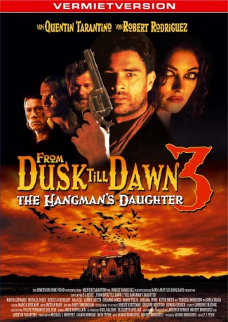
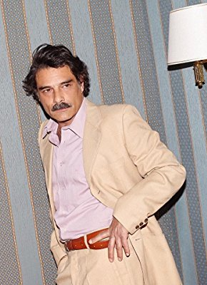
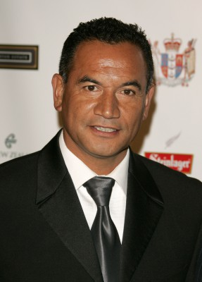
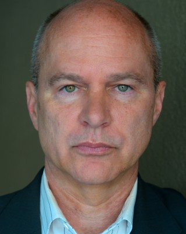

#9522 From Dusk Till Dawn 3: The Hangman's Daughter
 
 IMDB-Wertung: 4.8 / 10
IMDB-Wertung: 4.8 / 10  Metascore: 0
Metascore: 0 
Mit knapper Not seinem Tod entkommen, flieht der Outlaw Johnny Madrid vor seinem Henker - ausgerechnet mit des Henkers wunderschöner Tochter Esmeralda an seiner Seite. Mit seinen Verfolgern auf den Fersen kommen Johnny, seine Gang und Esmeralda in der Abenddämmerung in ein Lokal, das von Vampiren geführt wird. Die Hohe Priesterin der Vampire hat es schnell auf Esmeralda abgesehen, um aus ihr die Halb-Mensch, Halb-Vampir Prinzessin Santanico Pandemonium zu erschaffen...
Jahr: 1999
Dauer: 94 Minuten
FSK: 18
Land: USA Studio: Echo Bridge Home EntertainmentTonspuren: DTS - ,
Untertitel:
Auflösung: 1080p (1920x1040) Größe: 8437 MB
Genre: Thriller, Horror, Western
Regisseur: P.J. Pesce
Drehbuch: Álvaro Rodríguez, Álvaro Rodríguez, Robert Rodriguez
Soundtrack: Nathan Barr
Darsteller:
-  Marco Leonardi als Johnny Madrid
 Michael Parks als Ambrose Bierce
Michael Parks als Ambrose Bierce-  Temuera Morrison als The Hangman
- Rebecca Gayheart als Mary Newlie
- Ara Celi als Esmeralda
-  Lennie Loftin als John Newlie
- Sônia Braga als Quixtla
 Orlando Jones als Ezra Traylor
Orlando Jones als Ezra Traylor Danny Trejo als Razor Charlie
Danny Trejo als Razor Charlie Jordana Spiro als Reece
Jordana Spiro als Reece- Mickey Giacomazzi als Erasmo
- Peter Butler als Pancho Villa
- Lynne Anne Rodgers als Vamp Girl
- Kevin Smith als Joaquin
- Terence Bridgett als Chato
- Ivan D. Lucas als Shotgun
- Tom Berto als Stagecoach Driver
- Graham Weir als Lazaro
- Carlos Vilela als Jaime
- Richard Thomson als Lalo
- Lance Kadish als Rinaldo
- Pierre Neethling als Nano
- Danny Keogh als Bartender
- Louis Kiss als Cihuacoatl - Old Crone
- Josephine Liederman als Beggar Woman
- Melissa Gilbert als Wedding Dress Whore
- Skye Blue als Joaquin's Vamp
- Marguerite Steven als Whore
- Leigh-Anne Belport als Vamp Girl
- Mimmika als Vamp Girl
- Sabina Bonvillain als Snake Girl
- P.J. Pesce als Man in Bar
Datei: X:\FSK18-Collections\From Dusk Till Dawn\From Dusk Till Dawn 3 The Hangman's Daughter (1999, FSK18, 1920x1040).mkv seit 06.09.2018
Festplatte: FSK18
 Alle Filme aus Gruppe 'FSK18-Collections\From Dusk Till Dawn'
Alle Filme aus Gruppe 'FSK18-Collections\From Dusk Till Dawn'